Instala VS Code y Python
Prepara tu computadora desde cero y verifica que Python realmente funciona antes de comenzar.
Aprende construyendo
De cero a tu primera web app con Django, paso a paso y sin saltos mágicos.
Instala tus herramientas, crea entornos controlados, conecta vistas y URLs, construye una aplicación To-Do con autenticación y aprende a resolver los errores que realmente aparecen cuando programas.

Cinco rutas guiadas, desde instalar Python hasta depurar errores reales. Marca tus pasos y vuelve cuando quieras.
Prepara tu computadora desde cero y verifica que Python realmente funciona antes de comenzar.
Aprende por qué existe un entorno virtual, créalo correctamente e instala Django sin contaminar otros proyectos.
Conecta proyecto, aplicación, URL, vista y template hasta mostrar tu primera página real en el navegador.
Construye una aplicación de tareas con usuarios, correo, nombre, contraseña, autenticación y animaciones.
Aprende a diagnosticar fallos de instalación, rutas, templates, migraciones, CSRF, módulos y servidor.
Cinco fases que conectan cada tutorial. No saltes verificaciones: cada etapa prepara la siguiente.
Preparar
Instalar herramientas.
Aislar
Crear entorno virtual.
Conectar
Comprender flujo Django.
Construir
Crear aplicación real.
Depurar
Resolver errores.
Cada tutorial sigue el mismo ritmo: acción, explicación, verificación. Sin magia, sin saltos.
Un paso a la vez. Ejecutas, guardas y compruebas antes de seguir.
Sabes qué hace cada comando y en qué archivo va el código.
Checkpoints claros: si no ves el resultado esperado, paras y revisas.
Cuando algo falla, tienes diagnóstico y pasos concretos para corregirlo.